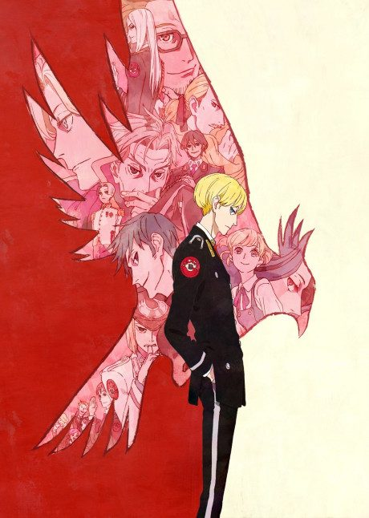

YATAGARASU: The Raven Does Not Choose Its Master
烏は主を選ばない
In a world of ravens that take human form, four women compete to marry the heir to the throne.
An original anime, so there's no book to continue with.
7.8AniList score
—Animeter, no votes yet
20episodes
Rate it or report where you stopped
Is it worth pushing through?
Built from what visitors report across all 20 episodes.
Loading reports…Checking what other people said about this one.
Sign in above with your email to add your report.
More like YATAGARASU: The Raven Does Not Choose Its Master
 VN7.3
VN7.3

Unclear7.5 Done9.0
Done9.0
 Unclear7.4
Unclear7.4
 Manga Ch. 567.8
Manga Ch. 567.8
 Manga Vol. 57.1
Manga Vol. 57.1
 Done8.1
Done8.1
 Done8.5
Done8.5
 Original8.1
Original8.1
 VN8.9
VN8.9
 Manga Ch. 1997.8
Manga Ch. 1997.8
 Original8.5
Original8.5